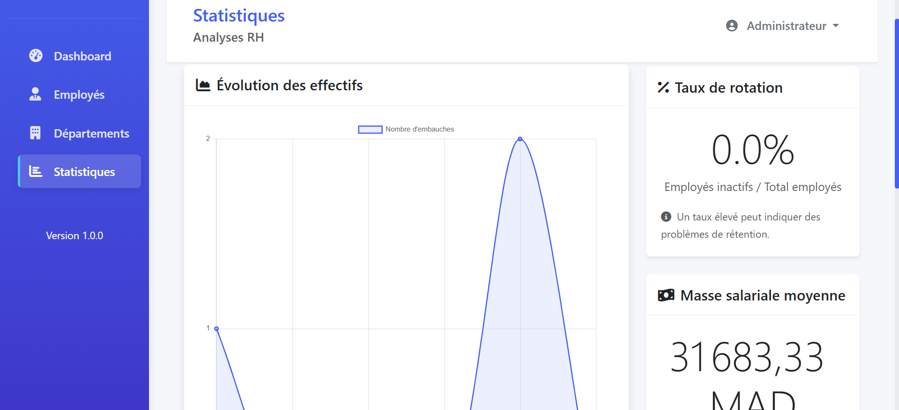

Aperçu du projet
Portail RH conçu pour centraliser les opérations d'une équipe : gestion des collaborateurs, suivi des départements, statistiques temps réel et tableaux de bord interactifs.
Fonctionnalités clés
- Gestion des employés, rôles et départements
- Tableaux de bord décisionnels avec KPIs RH
- Système d'authentification et permissions
- Exports et reporting pour le suivi trimestriel
Galerie


Difficultés rencontrées
Harmoniser les droits d'accès entre managers et RH tout en gardant une interface simple, puis optimiser le chargement des statistiques sur des volumes croissants.
Solutions mises en place
Mise en place d'un RBAC clair, pagination des listes, cache léger pour les métriques, et composants réutilisables pour un rendu fluide.